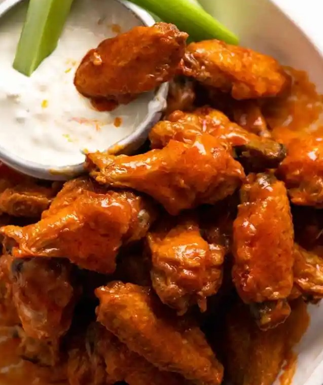

Buffalo Wings

The beauty of baked buffalo chicken wings is that you can get the same, crispy texture without the need for splattering hot fryer oil.
Using our handy baking powder trick and a wire rack, they get a wonderful crust with a fraction of the fat of deep-fried versions.
Tossing the crispy wings together with a buttery, tangy buffalo sauce is irresistibly good.
- 3 lb chicken wings, wings and drummettes split, wingtips removed
- 1 Tbsp baking powder, (use aluminum free)
- 1 tsp fine sea salt
- 2 tsp garlic powder
Buffalo Sauce:
- 1/4 cup unsalted butter, melted
- 1/4 cup Franks Original Red Hot Sauce
- 1 tbsp granulated sugar, or brown sugar
- Thoroughly pat dry the chicken with a paper towel. Preheat the oven to 450˚F. Line a rimmed baking sheet with foil and place a wire rack over the pan.
- Combine the baking powder, salt and garlic powder in a bowl, sprinkle over the chicken and toss to combine. Arrange chicken on the prepared wire rack.
- Bake the chicken for 25 minutes, flip it over and bake for another 25 minutes or until crisp and cooked through.
- In a medium-size bowl combine sauce ingredients. Remove chicken from the baking sheet to a bowl. Drizzle the sauce over the chicken.
Toss to coat the chicken in the sauce. Serve with your favorite dipping sauce.
Return to main page